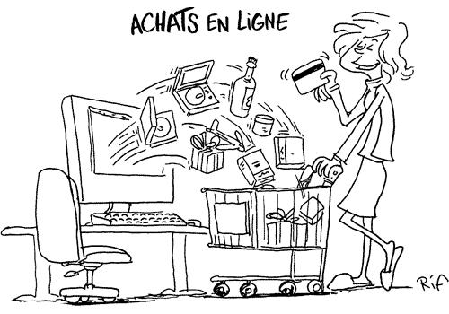

Il n'était jamais si simple de vendre ou achéter toute sorte de chose sauf de l'aliment biensûr. Si on a des vêtements qu'on n'utilise plus ou qui sont déjà trop petit. Faites une photo de l'article, sauvegardée la sur le site (voir sur Vendre un article) avec vos données personnelles pour que les clients (ceux qui sont interessé par l'article) puisse vous contacter, soit par email ou téléphone.
Pour ceux qui sont à la recherche des vêtements, cliquez-ci dessous: Shop
Si vous voulez contacter le responsable du site, cliquez-ci dessous: Contact
